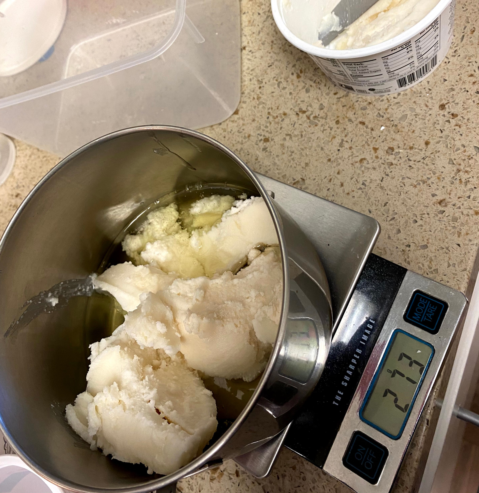
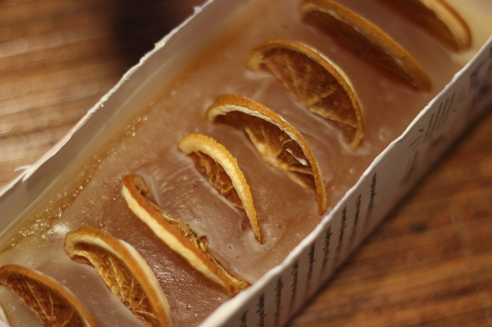
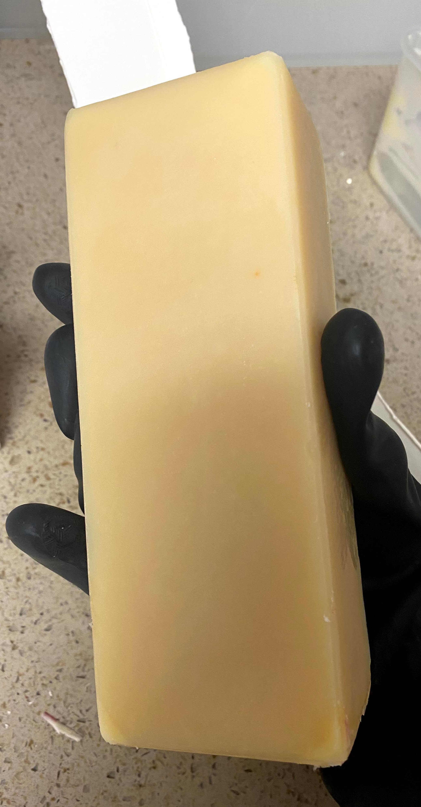
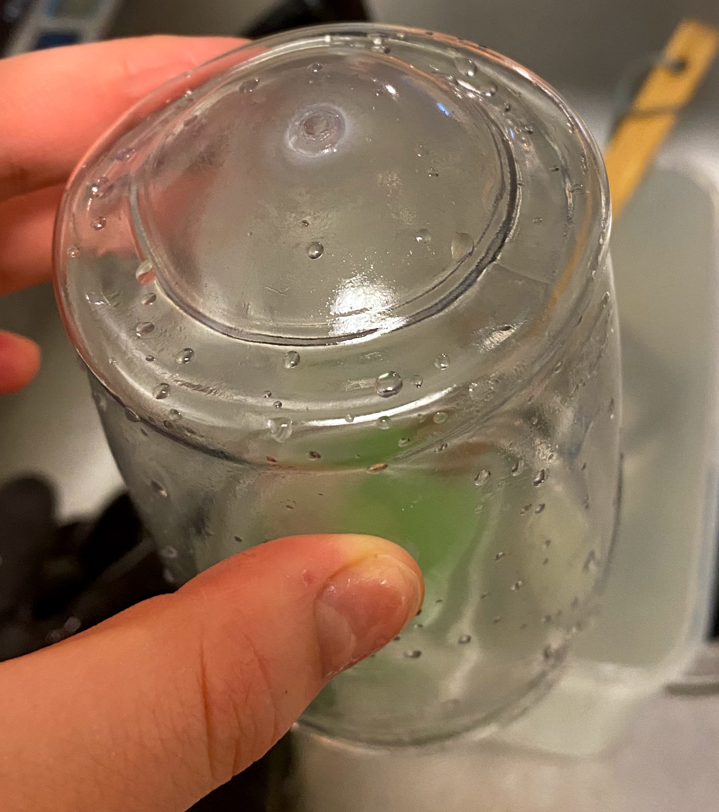
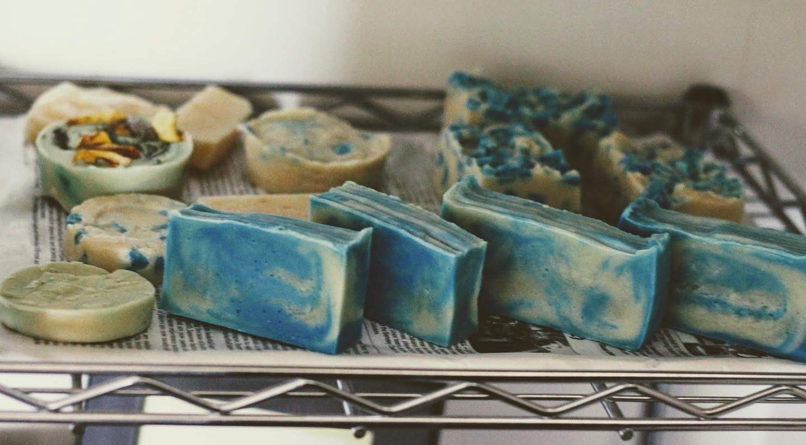
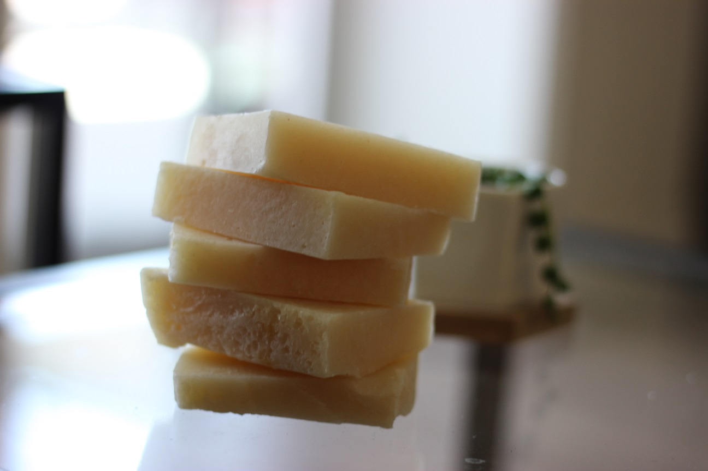
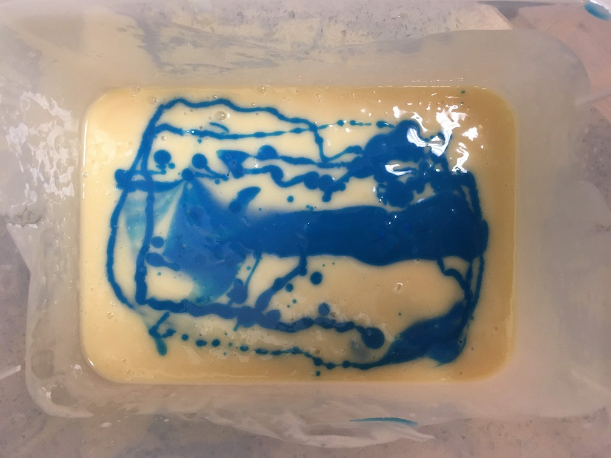
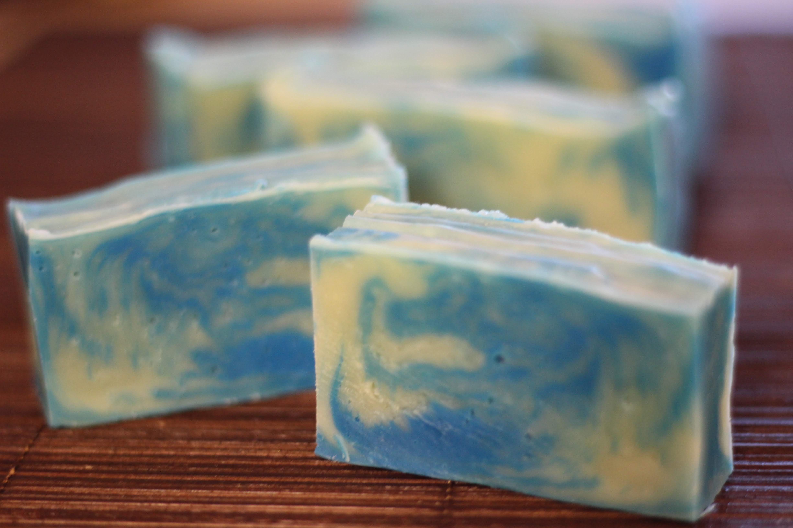
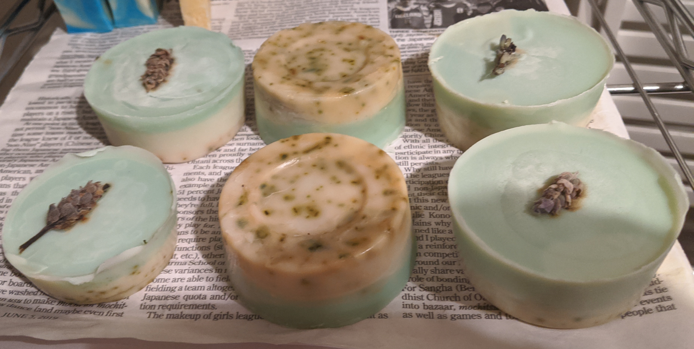

I started soaping for the following reasons:
- We had old oil we used for frying that we failed to take to the recycling center during our move in 2017.
- We had a gallon of old canola oil that one of my old roommates left between 2014 and 2015.
- My spouse eats a lot of bacon due to his keto diet.
My mom had told me before that my grandma would make something called 廃油石鹸, which in English means “Waste oil soap” back in the day with old frying oil.
In Japan, it’s supposedly a community event where households contribute old frying oil and dump them in a pot with a bunch of lye and distribute the mixture in old tofu containers and take them home to use as dish and laundry detergent.
So I knew it was always an option if I ever had a lot of oil.
In September of 2019, I went ahead and purchased a 4oz bag of NaOH (Lye) from Amazon, watched a bunch of YouTube videos, studied up on oil properties, and came up with the following tenets:
- I shall not buy any new supplies for making soap, besides from ingredients.
- I shall not buy large quantities of ingredients that will be left over after I get bored of this hobby.
Thankfully, most of the ingredients for soapmaking are repurposable. Aroma oils can be used for aromatherapy, butters and oils can be used for beauty and cooking, and lye can be used for cooking or cleaning. You might suspect that using such old oils, my soaps must smell repulsive!! That is not the case. I’ve found with my recipes, the soaps smell fine, even when I foam it up and put it on my face. Thank you, essential oils, and thank you, lye?
In this post, I will cover:
Technique
Making soap is kind of like making fudge, except that it’s super dangerous and you have to wait a bunch.
I use the cold process method. It is better documented by Soap Queen. Really, you can find everything you need about soapmaking here. The videos are especially helpful.
In my own words:
- Measure and mix the oils together and warm them up to 110~130F.
- Measure and keep your essential oil nearby. Measure water and ice mixture (in a heat safe container) and keep it nearby.
- Prep your workstation with your big container, stick blender, rags, and molds. Clean up your work area. Turn on your vent.
- Wear gloves and goggles and cover your skin. I also wear a mask.
- Measure lye!!!! Be careful!
- Gradually stir the lye INTO the water.
- Wait until lye solution is around the same temp as the oils.
- Dump oils into the big container, turn on the stick blender a bit to ensure bubbles are out.
- Mix lye solution in to the big container.
- Turn on stick blender until trace.
- Add essential oil and mix with blender or by hand.
- Put batter in mold.
- Wait 24 hours.
- Unmold. Cut if necessary.
- Let the soap cure in a ventilated place for 4 weeks.
- Success!
It’s probably a good idea to mention that lye, lye solution, uncured soap burns skin and damage eyes on contact. This is why we wear protection.
This is me measuring the fats. Yes, the huge chunk is cleaned bacon fat. Sorry if you think it’s gross. (At least I’m not eating it?) 
Supplies
I use:
- Kitchen scale
- I use old milk cartons and random containers (yogurt cups look nice) for molds.
- Stick blender: Ninja The Warrior NJ200
- Spatula
- Old tupperware for the mixing
- Random rags
- Kitchen thermometer
- Protection gear (rubber heatproof gloves, ski goggles, N95 mask, large hoodie, pants, socks)
Recipes
To make your own recipes, I recommend looking at oil properties and testing out recipes at SoapCalc.net’s Recipe Calculator.
Essential/Fragrance Oils
I purchased some essential oils from Thailand and a few fragrance oils online.
Some of them behave unexpectedly, so I think it’s always good to be careful. For example, the lavender essential oil from Thailand caused my batter to seize.
I watched a bunch of YouTube videos by Royalty Soaps which kind of prepares you to handle worst case scenarios.
My personal favorites for essential oils are eucalyptus and tea tree.
My Signature Recipe
Maybe I haven’t had enough time to say this is my final signature recipe, but this is one I am happy about.
The recipe is: follow the instructions for cold process with these ingredients:
- 258.5g Water
- 97.8g Lye
- 21.3g Essential Oil
- 204.1g Coconut Oil
- 204.1g Canola Oil
- 272.2g Cleaned Bacon Fat
Wait – what’s cleaned bacon fat?
We store bacon fat from cooking bacon in a jar, and when there’s a good amount of it, I go and boil it with 2 times volume water for about 15 minutes, and let it cool. The fat and dirty water separate, I dump the dirty water, and repeat until the water is clean. I repeat this anytime between 3 to 5 times depending on the bacon fat condition. The detailed instructions are in Soap Queen’s How to Prepare Bacon Grease for Soapmaking.
This soap has gone into gel phase when I’ve made it in the milk carton and insulated the container with blankets: This is good because it gives a nice semi-translucent look when it’s done.

You can read more about gelling here.
It is super satisfying to unmold and cut this soap. I can’t say the same for other recipes, because they are not as hard.

Here’s how it looks done:

For this one, I took some oranges from my parents’ yard, sliced them, and dried them in the oven for decoration.

Here, the lavender essential oil caused the batter to seize, so it looks a bit funky, but it did an amazing job cleaning my hands during a difficult time.
From my research and experience:
- Animal fat is creamy, produces a good lather, and moisturizes.
- Coconut oil is cleansing and produces big bubbles, but dries out the skin, so keep it under 33%.
- Canola oil is moisturizing.
This soap is my favorite because it’s hard, lasts a long time, produces fluffy bubbles, a stable lather, cleans well, and moisturizes.
I use it for hand-washing and body-washing, and no problems after a couple of months.
As you’ll see in my Other Attempts section, I’ve tried some variations of the three oils. This for me, has worked the best, which is why it is my signature soap.
Vegan Recipe
I need to still perfect my vegan recipe, but this is what I have so far.
I attempted my vegan recipes before I got a bunch of coconut oil from Thailand.
Because I only used canola oil (no coconut oil) in my vegan recipes, it comes out a little soft and lacking in hard, big bubbles.
To counteract, I add table salt, which hardens the bar.
- 104g Water
- 58g Lye
- 1 tsp Salt
- 454g Canola Oil
This is the above recipe with cut pieces of another vegan recipe in the other attempts section.

My next attempt will be 30% coconut oil, plus maybe some cacao butter, and the rest to be canola oil.
Shampoo Recipe
My shampoo recipe is a simplified version of the Lizard Lady’s Shampoo formula.
- 172.4g Apple Cider Vinegar
- 68g Lye
- 226.8g Canola Oil
- 149.7g Coconut Oil
- 31.7g Castor Oil
- 22.7g Cacao Butter
- 22.7g Olive Oil
- 13g Essential Oil + Olive Oil Mix
Apple cider vinegar is supposed to be good for dandruff control, so I use it here in place for water.
I should cool the ACV before I mix the lye, because I actually destroyed my container (should use a more heatproof container anyway) in the process of mixing lye into the liquid.

Cacao butter is a substitute for mango butter, which I used because it’s more repurposable.
Castor oil is great for hair repair.
Olive oil is moisturizing.

Besides from the lye solution container fiasco, the shampoo making process was pretty straightforward. The batter is a little looser than my usual soaps’, and it unmolded slightly crumbly, but it came out nicely.
I’ve used it for my hair twice now, and it’s totally fine, maybe a little bit drying.
Other Attempts
Here I will document other attempts at making soap.

My First Soap
I tried to play it safe by testing on soapcalc.net to see what the ideal formula would be like, and ended up with:
- 172.4g Water
- 66.98g Lye
- 14.18g Fragrance Oil
- 453g Oils: 35% Bacon Fat, 45% Canola Oil, 20% Coconut Oil

This one was good, but a little softer than my signature soap.
It was also not as pretty due to my inexperience.
Super Slimy Vegan Soap
This was a 4 ingredient soap where I attempted a swirl with eyeshadow that I didn’t use, but I probably put in too much color.
Because I knew the soap was going to be soft, I left it in the mold for 4 days before cutting. It was still very soft.
- 172.4g Water
- 57.2g Lye
- 453.6g Canola Oil
- 14.18g Fragrance Oil
I used up a bar in like 4 days. At least I got some swirl practice!! There are a bunch of variations of swirls for soapmaking. Here I do what’s called an in-the-pot-swirl.


Tryhard Two-toned Soap
I used the same formula as my first soap for this, but attempted a gradient (which turned out more like a two-tone) by coloring with eyeshadow that I didn’t use.
The bits are dried and ground up herbs from my mom’s garden.

It made for good gifts.
Soapmaking as a Hobby
I recommend soapmaking as a hobby for the following reasons:
- Ingredients are repurposable in case you get bored of it.
- Makes good gifts since everyone needs soap. Just be careful how to market your soap if you have sketchy oils in yours like I do.
- Consumable, so you don’t end up with a bunch just lying around.
- Compact: I have a spot in my rolly shelf dedicated for curing soaps, and try not to make too much at once.
- Thrilling: You have to be cautious and speedy when making soap. I always break a little bit of sweat after soapmaking. It’s a good feeling.
- You can get creative with your designs if you are an artsy person!
There are people who transition this hobby into an actual gig, and I would like to caution against that because ingredients, packaging, marketing will get expensive. There are some artisans who make videos on YouTube that make really cool soap, so I am all about supporting them.
My soap will be just for me, family, and some friends who feel safe using my soap. Speaking of which, if you’d like some, feel free to reach out. I do not deliver, so you’d have to pick them up somewhere :)